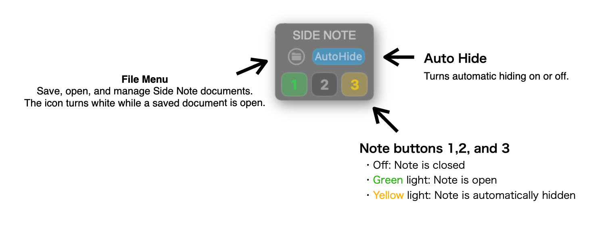
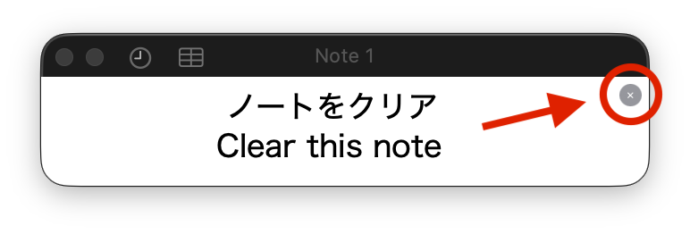
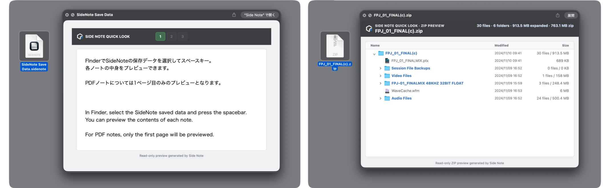
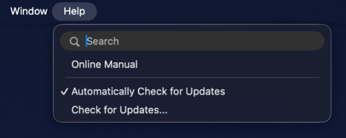

Web Manual
Side Note
Manual
Overview
Overview
Side Note is a macOS viewer that keeps text, PDFs, and images visible beside your workspace, even while you work in other apps.
Switch between three notes to keep the notes and reference materials you need close at hand.
Use it with any app—not only a DAW—to collect text and images while browsing the web or keep reference materials and PDFs visible while you work.
Each note can be used as either a text note or a PDF note.
Control
Side Note Controls
Use the compact Side Note controls to show notes, use AutoHide, and manage files. The color of each note button shows its current display state.

Delete a Note
Use the small × button in the upper-right corner to delete the note’s contents and return it to its default state.

Shortcuts
Shortcuts
Use shortcuts for note visibility and frequently used text and PDF operations.
Show or Hide Notes
The following three shortcuts are global shortcuts.
They show or hide Side Note notes even while you are working in another app.
| ⌥ + F1 | Show / hide Note 1 |
|---|---|
| ⌥ + F2 | Show / hide Note 2 |
| ⌥ + F3 | Show / hide Note 3 |
Note Operation Shortcuts
Background opacity applies to all notes.
PDF zoom and text size apply only to the selected note.
| ⌥ + ⌘ + ] | Increase note background opacity |
|---|---|
| ⌥ + ⌘ + [ | Decrease note background opacity |
| ⌥ + ⌘ + 0 | Reset note background opacity |
| ⌘ + / ⌘ - | Change PDF zoom or text size |
AutoHide
Use AutoHide
When AutoHide is on, move the pointer over a Side Note note and stop immediately while working in another app; the note slowly fades out. It does not activate while you are working in Side Note itself. Use it to temporarily hide notes while you work.
| AutoHide ON | Automatically hide a note when the pointer stops over it while you are using another app |
|---|---|
| ⌘ + Tab to Side Note | Restore every note hidden by AutoHide |
Temporarily Cancel AutoHide
You can temporarily cancel AutoHide without turning it off when you want to work with a note, such as when scrolling text or a PDF.
| Scroll | Scroll text or a PDF with the scroll wheel to cancel AutoHide |
|---|---|
| Keep moving the pointer | Keep the pointer moving after entering the note instead of stopping immediately to cancel AutoHide |
| ⌘ key | Press the ⌘ key to cancel AutoHide |
Once cancelled, AutoHide does not run again just by stopping over the note. Move the pointer outside the note, then enter it again.
The pointer-movement and ⌘-key cancellation options can be turned on or off independently in Settings. Both are on by default.
Save
Save and Load
Side Note does not require you to create a document when it launches. Start using it immediately for temporary notes, then save any state you want to keep from the File menu.
Save stores note contents along with the position of each note, visible PDF pages, note visibility, and other current Side Note state. Load restores that saved state.
| Save | Save note contents together with their display state and positions |
|---|---|
| Load | Restore saved contents, display state, positions, PDF pages, and more |
Quick Look
Select a Side Note package in Finder and press Space to inspect its contents with Quick Look.
You can quickly review saved notes without launching Side Note.
Side Note Quick Look also supports ZIP archives.

Detailed Manual
About Saved Data
Side Note saves data as a package. Text, pasted images, and imported PDFs are stored inside the package, so saved Side Note data can still be loaded after original images or PDFs have been moved or deleted.
In Finder, right-click a package and choose “Show Package Contents” to inspect the files stored inside.
Export
Export
Export notes as PDF files or standalone HTML viewers.
Use the File menu in the menu bar.
Export the Selected Note as PDF
- Export the currently selected note as a PDF.
- Text notes export their full contents, including pasted images, as one continuous PDF.
- PDF notes export their imported PDF as is.
Export a Standalone HTML Viewer
- Export the contents of Notes 1–3 as one HTML file.
- Open the exported HTML in a browser on a Mac or Windows PC without Side Note installed.
- Use the browser’s print feature to print the selected note or save it as a PDF.
- Use it to share note contents with people who do not use Side Note.
Use standalone HTML to quickly share all three notes together, or PDF to share the selected note while preserving its appearance.
RTC Integration
Relative Time Counter (RTC) Integration
With Relative Time Counter (RTC), you can use time expressions in text notes to locate the counter directly.
RTC version 2026.8.21 or later is required.
Locate RTC from Text
Hold ⌘ (Command) and place the pointer over a time expression in text; it turns into a green link.
Click the link to send that time to RTC and locate it.
Examples of supported time expressions
- 1:23 / 01:23
- 1:23:45 / 01:23:45:12
- 15秒 / 1分 / 1分23秒
- 15s / 42sec
- 1m23s / 1min 23sec
Full-width digits and colons are also supported, as are semicolons and periods as separators.
RTC’s current settings determine the actual interpretation, including REL / ABS and frame handling.
Insert the RTC Time into a Note
Click the clock icon in a note’s title bar to insert RTC’s current counter time as text.
For example, if RTC displays 2:25, Side Note inserts 2:25 at the text cursor.
This is useful for recording noteworthy moments while reviewing a mix or edit, or for adding time references to a lyric sheet.
Add Writing Space
Select text, then click the table icon in the note title bar to convert it to a table and add a new column on the left. Use that column for notes, section names, or other annotations.
Combined with RTC integration, use the clock icon to insert times alongside lyrics or an arrangement.
Table context menu
- Add a memo column on the left
- Delete the column containing the cursor
- Show or hide table borders
Notes
Notes
About Editing Features
Side Note is designed primarily as a viewer. PDF and text editing are intentionally minimal. Text editing and PDF viewing use Apple’s standard technologies, so some standard features may be available from the context menu.
About Pasted Images
Drag pasted images to resize them. Double-click an image to show an enlarged preview.
Launch While Holding Shift
Start with Note 1 in text mode, ready to write.
Updates
Updates and Release History
Check whether a newer version is available from “Check for Updates…” in the Side Note or Help menu.

When “Automatically check for updates” is on, Side Note notifies you when an update is available.
View Side Note Release History